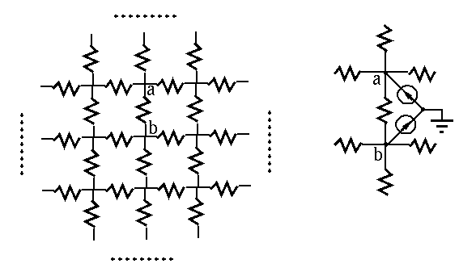
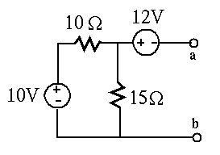
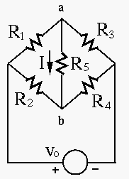

Hint: Add two 1A current sources to the two nodes, as shown in the
figure, and use superposition theorem to find the current  from
a to b, and thereby the voltage drop between a and b. Note that as the
network is infinite, the four branches of each node are totally symmetric
and therefore the currents through them are identical. The resistance
between these nodes can be found by Ohm's law.
from
a to b, and thereby the voltage drop between a and b. Note that as the
network is infinite, the four branches of each node are totally symmetric
and therefore the currents through them are identical. The resistance
between these nodes can be found by Ohm's law.



